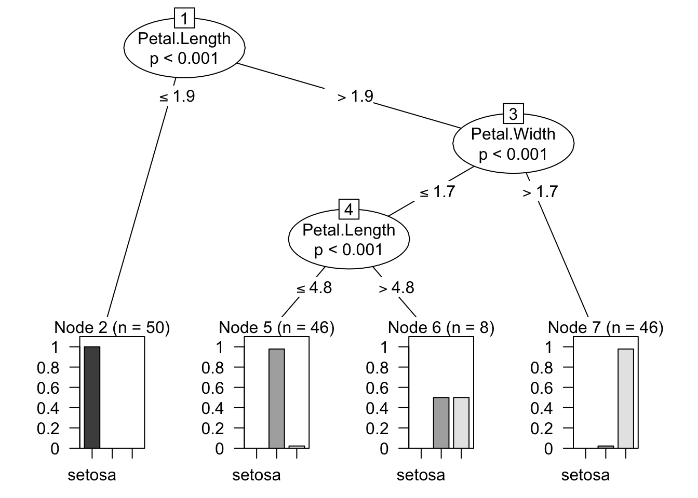
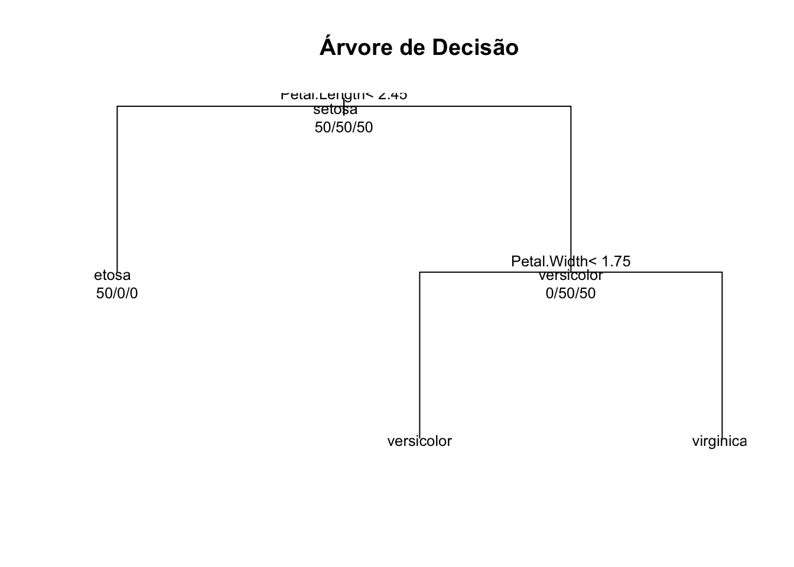
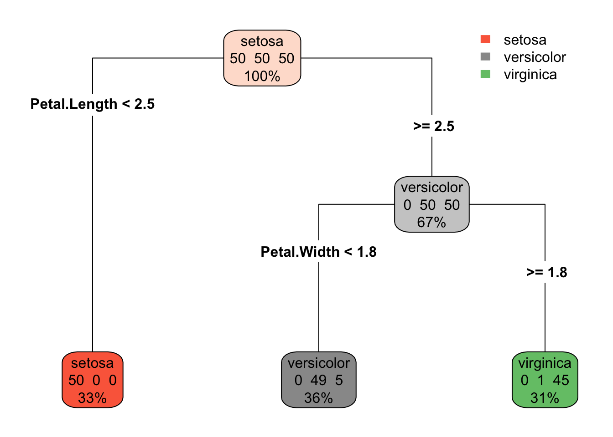
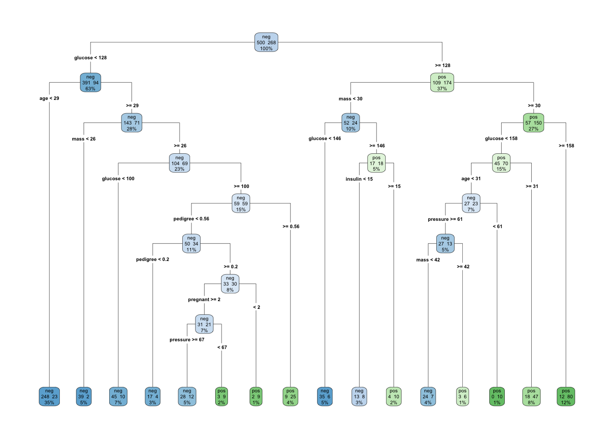
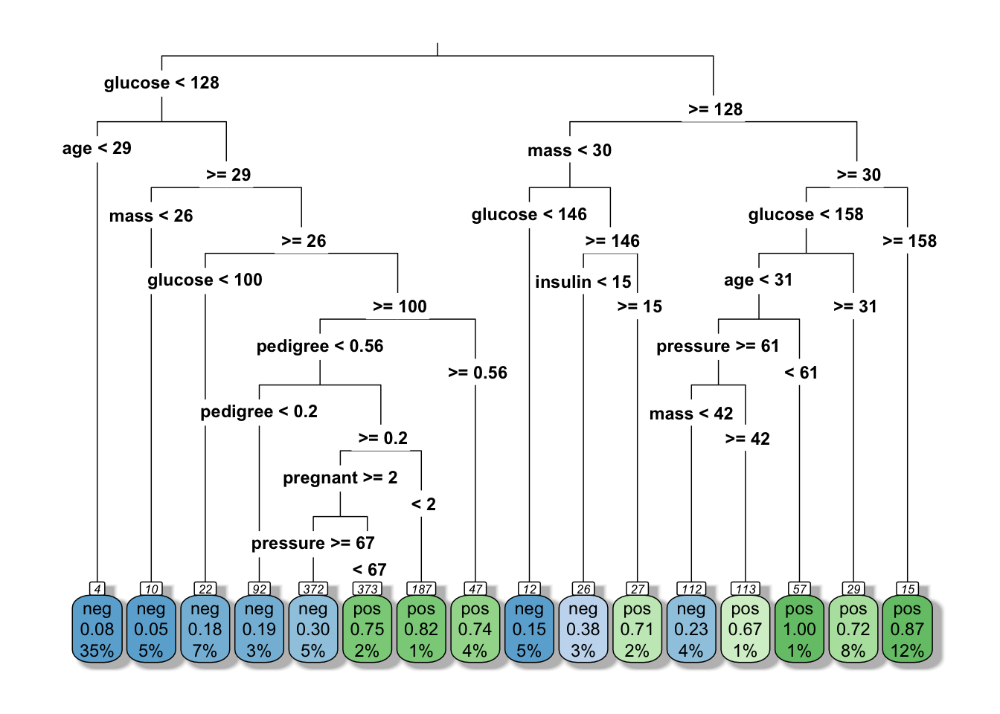

Arvore_saude
Árvores na tomada de decisão em saúde
## Instalar e carregar a biblioteca
pacman::p_load(party)
## verificar dados
head(iris)Sepal.Length Sepal.Width Petal.Length Petal.Width Species 1 5.1 3.5 1.4 0.2 setosa 2 4.9 3.0 1.4 0.2 setosa 3 4.7 3.2 1.3 0.2 setosa 4 4.6 3.1 1.5 0.2 setosa 5 5.0 3.6 1.4 0.2 setosa 6 5.4 3.9 1.7 0.4 setosa
## visualizar arvore de decisão
modelo <- ctree(Species~.,data=iris)
## aplicar modelo preditivo
table(predict(modelo), iris$Species) setosa versicolor virginicasetosa 50 0 0 versicolor 0 49 5 virginica 0 1 45
plot(modelo)
## Instalar e carregar a biblioteca
pacman::p_load(rpart)
## Carregar os dados
data(iris)
## Criar a árvore de decisão
arvore <- rpart(Species ~ ., data = iris)
## Imprimir a árvore de decisão
printcp(arvore)Classification tree: rpart(formula = Species ~ ., data = iris)
Variables actually used in tree construction: [1] Petal.Length Petal.Width
Root node error: 100/150 = 0.66667
n= 150
CP nsplit rel error xerror xstd1 0.50 0 1.00 1.21 0.048367 2 0.44 1 0.50 0.74 0.061232 3 0.01 2 0.06 0.07 0.025833
## Plotar a árvore de decisão
plot(arvore, uniform = TRUE, main = "Árvore de Decisão")
text(arvore, use.n = TRUE, all = TRUE, cex = .8)
## Instalar e carregar a biblioteca
pacman::p_load(rpart.plot)
## Plotar a árvore de decisão usando rpart.plot
rpart.plot(arvore, type=4, extra=101)
Aqui, type=4 é usado para criar uma árvore de decisão clássica, enquanto extra=101 é usado para imprimir as taxas de erro de classe e o número de observações em cada nó. Para personalizar ainda mais o gráfico, você pode experimentar diferentes valores para o parâmetro extra ou outros parâmetros disponíveis em rpart.plot.
Este código criará uma visualização agradável e compreensível da árvore de decisão para o conjunto de dados Iris.
2. O Dado de Saúde
Para este exemplo, vamos usar o conjunto de dados “PimaIndiansDiabetes” disponível na biblioteca “mlbench”. Este conjunto de dados inclui informações de mulheres com pelo menos 21 anos de descendência Pima Indian. Inclui medidas como número de gravidezes, glicose, pressão arterial, entre outros.
## Carregar o conjunto de dados PimaIndiansDiabetes
pacman::p_load(mlbench, janitor,dplyr)
### Este conjunto de dados inclui informações sobre saúde de mulheres de ascendência Pima Indian
### Qual a diferença?
data(PimaIndiansDiabetes) #0
data(PimaIndiansDiabetes2) #NA
## Lembrando como limpar o dataset, substituir NAs por 0 em todas as colunas
## deixar o PimaIndiansDiabetes2 igual ao PimaIndiansDiabetes
##dplyr
PimaIndiansDiabetes2_clean <- mutate_all(PimaIndiansDiabetes, ~ ifelse(is.na(.), 0, .))
## janitor
# PimaIndiansDiabetes2_clean <- replace_na(PimaIndiansDiabetes2, replace = list(all = 0))
## Criar a árvore de decisão
### Estamos tentando prever a variável "diabetes" com base nas outras variáveis
arvore_saude <- rpart(diabetes ~ ., data = PimaIndiansDiabetes)
## Imprimir a árvore de decisão
### Esta função mostra o resultado da árvore de decisão como texto
printcp(arvore_saude)Classification tree: rpart(formula = diabetes ~ ., data = PimaIndiansDiabetes)
Variables actually used in tree construction: [1] age glucose insulin mass pedigree pregnant pressure
Root node error: 268/768 = 0.34896
n= 768
CP nsplit rel error xerror xstd1 0.242537 0 1.00000 1.00000 0.049288 2 0.104478 1 0.75746 0.80970 0.046558 3 0.017413 2 0.65299 0.73507 0.045158 4 0.014925 5 0.60075 0.74254 0.045307 5 0.013060 9 0.54104 0.73507 0.045158 6 0.011194 12 0.49254 0.73134 0.045083 7 0.010000 15 0.45896 0.72761 0.045007
## Plotar a árvore de decisão com rpart.plot
### Esta função cria uma visualização básica da árvore de decisão
rpart.plot(
arvore_saude,
yesno = 2,
fallen.leaves = TRUE,
type = 4,
extra = 101
)
Aqui,
type=4é usado para criar uma árvore de decisão clássica, enquantoextra=101é usado para imprimir as taxas de erro de classe e o número de observações em cada nó. Para personalizar ainda mais o gráfico, você pode experimentar diferentes valores para o parâmetroextraou outros parâmetros disponíveis emrpart.plot.Este código criará uma visualização agradável e compreensível da árvore de decisão para o conjunto de dados Iris.
Regenerate response
## Plotar a árvore de decisão usando rpart.plot
rpart.plot(arvore_saude, type=3, box.palette="auto", shadow.col="gray", nn=TRUE)
type=3: Este é um dos sete tipos principais de plots disponíveis na função rpart.plot. O type=3 é chamado de “fan”, e é um plot de árvore clássico que exibe a árvore com um estilo de exibição em leque.
box.palette=“auto”: Esta opção controla as cores das caixas nos nós finais da árvore. “auto” significa que as cores serão escolhidas automaticamente.
shadow.col=“gray”: Esta opção adiciona uma sombra cinza atrás de cada caixa no plot para dar um efeito 3D.
nn=TRUE: Esta opção adiciona o número de observações em cada nó no plot.
Estas são apenas algumas das muitas opções disponíveis na função rpart.plot. Para mais detalhes e para explorar outras opções, você pode verificar a documentação da função rpart.plot no R.
Avaliando as árvores
A árvore de decisão é uma representação gráfica de um modelo de previsão que utiliza perguntas sobre os dados para tomar decisões e classificar as observações em categorias.
Ao analisar o output da árvore de decisão, podemos observar o seguinte:
Cada retângulo representa um “nó” na árvore, que corresponde a uma condição ou uma decisão.
A primeira linha em cada nó indica a variável que está sendo testada naquele ponto.
A segunda linha mostra o valor de corte usado para dividir os dados em dois ramos.
A terceira linha representa a contagem de observações em cada ramo, onde “yes” indica o número de observações classificadas como positivas (diabetes = 1) e “no” indica o número de observações classificadas como negativas (diabetes = 0).
A quarta linha indica a porcentagem das observações em cada ramo, relacionando o número de observações em cada ramo com o total.
Nos nós terminais (folhas), encontramos a classificação final. Nesse caso, temos uma das três possibilidades: “0” para diabetes negativo, “1” para diabetes positivo ou “?” quando não há observações suficientes para tomar uma decisão.
A linha “N” indica o número total de observações em cada nó.
Os ramos da árvore mostram o caminho a ser seguido com base nas respostas às perguntas de divisão. Por exemplo, se uma observação atende à condição no nó raiz, ela seguirá para a esquerda, caso contrário, seguirá para a direita.
A árvore de decisão pode ser usada para prever a presença ou ausência de diabetes com base nas características das mulheres de ascendência Pima Indian. Seguindo o caminho da árvore de cima para baixo, podemos ver as condições que levam a cada classificação. A interpretação e análise detalhada dependem das características específicas do conjunto de dados e do objetivo do estudo.